채널: 파인만의 길 | 길이: 25:59 | 날짜: 20260608
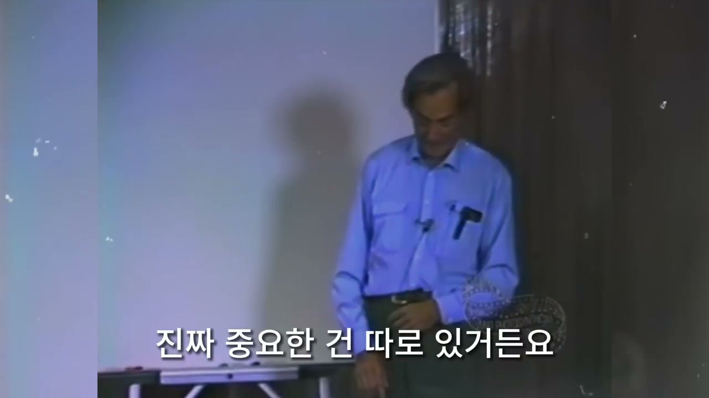
영상은 시청자들이 “어떻게 해야 남들과 다르게 본질을 꿰뚫는 사고방식을 가질 수 있느냐”고 묻는다는 말에서 시작한다. 발화자는 사람들이 대체로 어딘가에 숨겨진 비법, 특별한 꼼수, 천재만 아는 방식이 있으리라고 기대한다고 설명한다. 그러나 그는 단호하게 “대단한 천재성이 필요한 게 절대 아니다”라고 말한다. 진짜 중요한 것은 따로 있으며, 자신도 그것을 깨닫는 데 꽤 오랜 시간이 걸렸다고 덧붙인다.
여기서 핵심은 “생각”을 선천적 재능으로 보지 않는 관점이다. 사람들은 천재를 보면 그 사람의 두뇌 구조나 지능을 먼저 떠올리지만, 영상은 파인만을 통해 사고 능력이 일종의 훈련된 습관임을 보여주려 한다. 중요한 것은 문제 앞에서 남의 설명을 받아들이는 태도가 아니라, 내 머리로 실제 현상을 끝까지 붙잡고 물어보는 습관이다. 그래서 영상 전체는 파인만의 일화를 나열하는 것이 아니라, 그 일화들 속에 반복되는 사고 습관을 추출하는 구조로 진행된다.
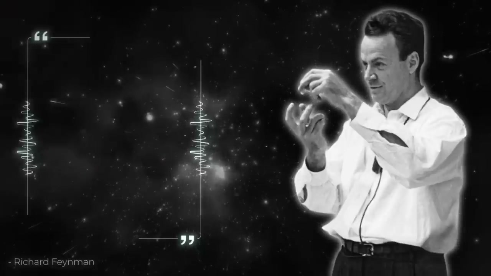
파인만이 열 살이나 열한 살쯤 되었을 때, 아버지와 캐츠킬 산맥을 산책하며 겪은 일화가 첫 번째 핵심 사례로 제시된다. 파인만의 아버지는 숲을 걷다가 새를 가리키곤 했고, 어느 날 한 새를 보며 여러 언어에서 그 새를 어떻게 부르는지 알려주었다. 이탈리아어, 포르투갈어, 중국어 등 다양한 언어 이름을 줄줄 알려준 뒤, 아버지는 잠시 뜸을 들이고 중요한 말을 덧붙인다. “이제 너는 저 새의 이름이 세상 온갖 언어로 무엇인지 알게 됐지만, 정작 저 새 자체에 대해서는 아직 단 하나도 아는 게 없다.”
이 말은 영상 전체를 관통하는 가장 강한 비유다. 우리는 흔히 어떤 대상을 설명하는 명칭, 분류, 정의, 용어를 알면 그 대상을 안다고 착각한다. 하지만 이름은 다른 사람들이 그 대상을 어떻게 부르는지에 대한 정보일 뿐이다. 그 대상이 실제로 무엇을 하고, 왜 그렇게 움직이며, 어떤 구조와 이유를 갖는지는 별도의 문제다.
아버지는 여기서 멈추지 않고 관찰을 요구한다. 가만히 서서 새를 유심히 보라고 한다. 그러면 새가 부리로 계속 자기 깃털을 쪼아대는 모습이 보이고, 거기서 “왜 저러는가?”라는 질문이 나온다. 깃털에는 단백질이 있고, 그 단백질을 먹는 이가 살며, 그 이가 알을 낳으면 더 많아지기 때문에 새는 청결을 유지하려고 하루의 절반가량을 깃털을 쪼며 보낸다는 설명으로 이어진다.
이 일화의 요지는 단순하다. “새 이름을 아는 것”은 외부의 언어를 수집한 것이고, “새를 아는 것”은 실제 새의 행동을 보고 그 뒤의 원인을 생각하는 것이다. 파인만은 이 교훈을 평생 품고 살았다고 제시된다.
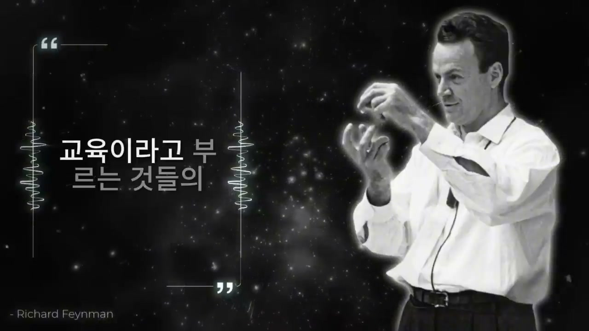
발화자는 이 일화를 교육 전반에 적용한다. 우리가 흔히 교육이라고 부르는 것의 상당수는 사실 껍데기 같은 이름표를 외우는 것에 불과하다고 말한다. 어떤 개념의 이름, 어떤 이론의 정의, 어떤 공식의 형태, 어떤 전문 용어를 익히는 것은 지식처럼 보이지만, 그것이 현실에서 무엇을 의미하는지 묻지 않으면 살아 있는 사고가 되지 않는다.
그는 진짜 생각을 “지금 저기서 실제로 무슨 일이 벌어지고 있는 걸까?”라고 묻는 데서 시작한다고 설명한다. 이 질문은 아주 단순하지만, 대부분의 학습 방식에서는 자주 빠진다. 학생은 교과서에 나온 정의를 외우고, 시험에 필요한 답을 기억하고, 교수의 수식을 받아 적는다. 그러나 그 정의와 수식이 실제 세계에서 어떤 현상을 가리키는지 상상하지 못한다면, 그것은 머릿속에 뿌리내리지 못한 지식이다.
이 부분에서 영상은 교육의 목적을 암기에서 관찰과 재구성으로 옮긴다. 교육은 이름표를 많이 붙이는 작업이 아니라, 대상이 실제로 어떻게 작동하는지 스스로 볼 수 있게 만드는 작업이어야 한다. 파인만이 강조한 것은 용어의 축적이 아니라 현실과 연결된 이해다.
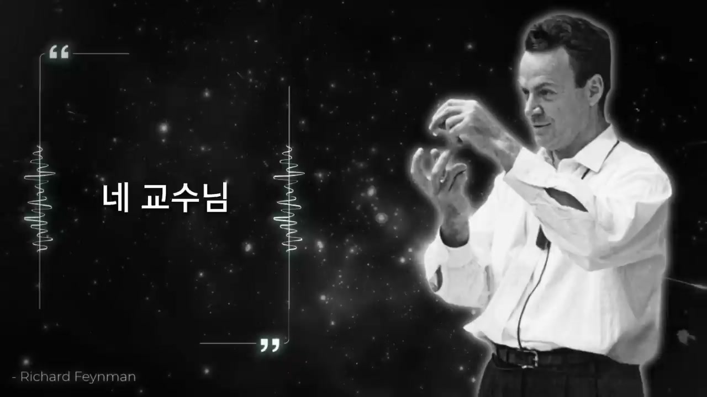
파인만이 훗날 MIT와 프린스턴에 진학했을 때의 이야기가 이어진다. 그는 미국에서 뛰어난 학생들과 나란히 앉아 고급 물리학 수업을 들었다. 양자역학이나 전자기학 같은 어려운 내용을 배우는 자리였고, 교수는 칠판에 예술처럼 아름다운 수식들을 적어 내려갔다. 학생들은 하나라도 놓칠까 봐 공책에 열심히 베껴 적었다.
수업이 끝날 무렵 한 학생이 손을 들고 “교수님, 이 수식이 도대체 무슨 의미인가요?”라고 묻는다. 교수는 다른 기호와 또 다른 수학적 언어를 동원해 그 수식을 다시 설명한다. 학생은 그제야 완전히 이해했다는 듯 고개를 끄덕인다. 하지만 파인만은 그 장면을 보며 속으로 다른 질문을 한다. “잠깐만, 저게 진짜 무슨 의미지?”
이 지점이 파인만의 사고방식이 드러나는 순간이다. 그는 수식이 수학적으로 맞는지를 묻는 데서 멈추지 않는다. 그 수식이 설명하는 진짜 현실 세계에서는 지금 무슨 일이 벌어지고 있는지 궁금해한다. 수식은 현실을 압축한 언어일 뿐이고, 이해는 그 압축을 다시 현실의 작동 장면으로 풀어낼 때 생긴다. 따라서 파인만에게 수식은 베껴 적어야 할 대상이 아니라, 현실을 들여다보게 해 주는 창이었다.
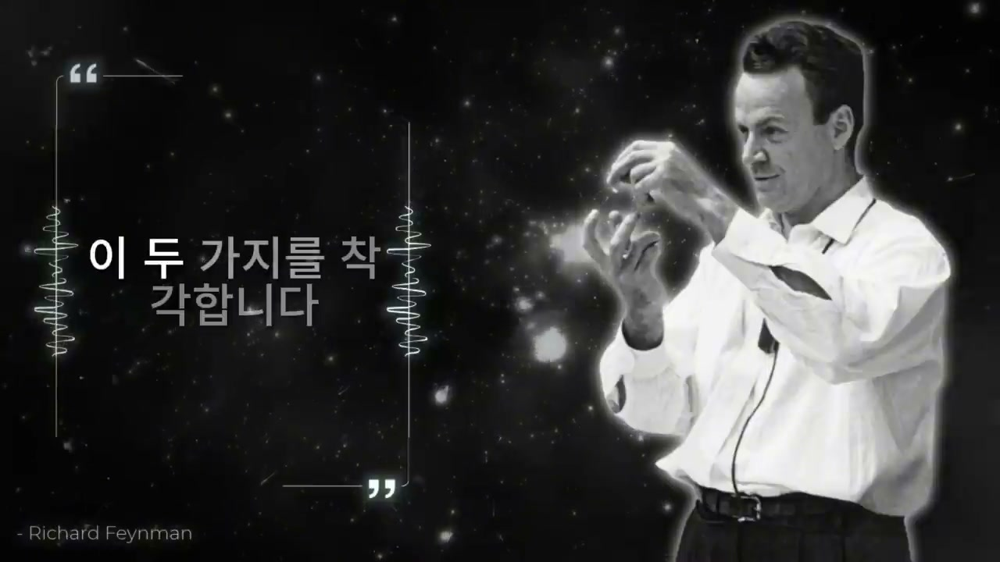
발화자는 무엇인가를 그냥 아는 것과 제대로 이해하는 것 사이에는 아주 거대한 벽이 있다고 말한다. 특히 많은 고학력자, 심지어 학위를 여러 개 가진 사람들조차 이 둘을 착각한다고 지적한다. 남에게 들은 이야기를 그대로 반복할 수 있고, 시험을 통과할 수 있으며, 어려운 전문 용어를 줄줄 말할 수 있기 때문에 스스로 이해했다고 믿는다는 것이다.
하지만 영상은 그것을 “이해”라고 부르지 않는다. 남의 이야기를 앵무새처럼 똑같이 따라 하거나, 내일 보는 기말고사를 통과할 수 있거나, 어려운 전문 용어를 잘 꿰고 있는 것은 이해가 아니다. 그것은 단지 외부 언어를 기억하고 재현하는 능력이다. 진짜 이해는 내가 그 대상을 내 언어로, 내 그림으로, 내 감각으로 다시 구성할 수 있을 때 생긴다.
발화자는 고학력자의 착각을 특히 경계한다. 많이 배운 사람일수록 용어와 형식을 잘 다룰 수 있기 때문에 자기 이해의 빈틈을 숨기기 쉽다. 그래서 겉으로는 더 그럴듯하지만, 실제로는 본질을 더 못 볼 수도 있다. 영상은 이런 상태를 “전문 용어 뒤에 숨는 것”으로 본다.
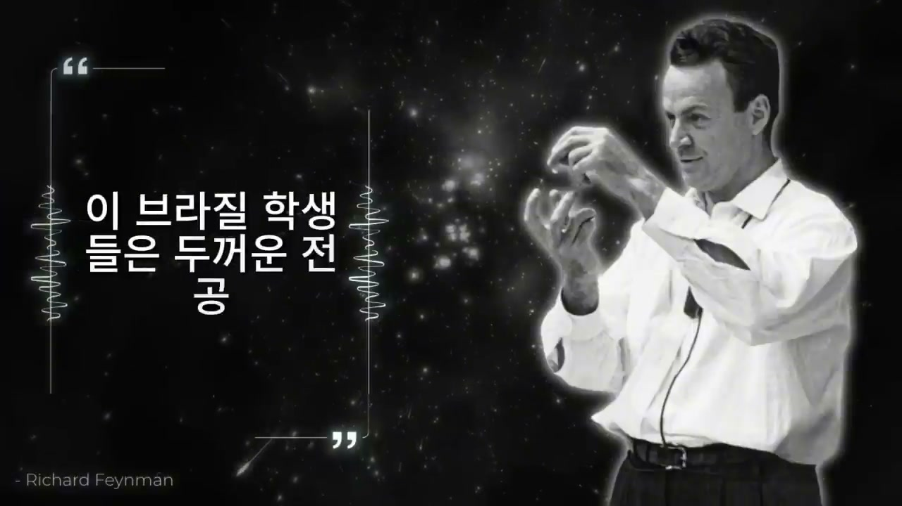
제2차 세계대전이 끝나고 로스앨러모스에서 원자폭탄 개발 프로젝트가 마무리된 뒤, 파인만은 브라질 리우데자네이루의 한 대학교로 물리학을 가르치러 갔다. 발화자는 그곳이 환상적인 곳이었고 학생들도 하나같이 학업에 진지하게 임하는 멋진 사람들이었다고 설명한다. 그러나 수업을 하다 보니 아주 이상한 점이 눈에 띄었다.
브라질 학생들은 두꺼운 전공 서적을 토씨 하나 틀리지 않고 통째로 외우고 있었다. 말 그대로 머릿속에 책을 복사해 둔 수준이었다. 하지만 폴라로이드 필터에 특정한 각도로 빛을 쏘면 어떤 일이 벌어지는가 같은 기초적 질문을 던지면 아무도 대답하지 못했다. 책에 적힌 결과만 외웠을 뿐, 그 결과가 왜 그런지, 현실에서 어떤 의미를 갖는지는 생각해 본 적이 없었던 것이다.
파인만은 질문 방식을 바꾼다. 교과서를 덮게 하고, 해운대 앞바다를 걷고 있다고 가정해 보자고 한다. 햇빛이 찰랑거리는 바닷물에 반사될 때 왜 특정한 각도에서는 윤슬이 유독 눈부시게 반짝이는지 묻는다. 학생들은 조용해진다. 이 질문은 교과서 문장을 외운 사람에게는 낯설지만, 실제 현상에서 출발하는 사람에게는 자연스러운 질문이다.
이 사례는 영상이 말하는 “현실 기반 사고”의 필요성을 가장 선명하게 보여준다. 지식이 현실에 뿌리내리지 못하면 시험 직후 일주일만 지나도 머릿속에서 사라진다. 반대로 현실 장면과 연결된 이해는 오래 남고, 새로운 문제에도 적용된다.
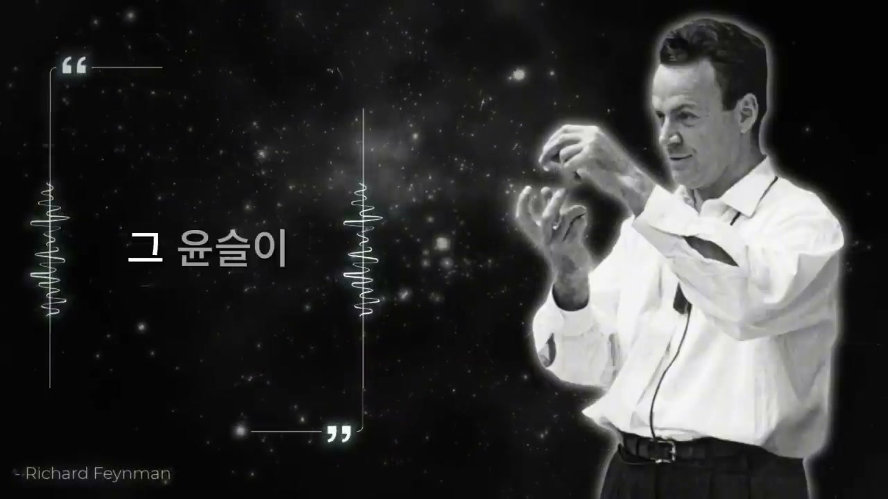
브라질 일화 뒤에서 발화자는 중요한 결론을 낸다. 생각한다는 것은 태어날 때부터 주어지는 천재적 재능이 아니라, 차곡차곡 쌓아 올리는 습관이다. 그러나 안타깝게도 대부분의 사람은 그 습관을 평생 갖지 못한다. 이유는 간단하다. 아무도 그 방법을 제대로 가르쳐 주지 않기 때문이다.
사람들은 남들이 떠먹여 주는 지식을 머릿속에 우겨 넣는 데 익숙해진다. 이 습관은 학교, 시험, 사회적 평가 속에서 강화된다. 다른 사람이 설명한 것을 받아 적고, 정답을 외우고, 권위 있는 말투를 흉내 내면 어느 정도 성과를 얻을 수 있기 때문이다. 그러나 그런 습관은 스스로 세계를 보고 질문하는 능력을 약화시킨다.
여기서 발화자는 “그 습관을 어떻게 기를 수 있을까?”라는 질문으로 전환한다. 무언가를 맹목적으로 받아들이는 대신, 내 뇌가 진짜로 생각하게 만들려면 어떤 훈련이 필요한가. 이후 영상은 파인만의 길에서 꼽는 세 가지 핵심 비결과 추가 태도를 순서대로 제시한다.
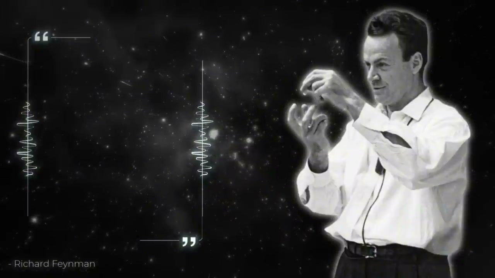
첫 번째 비결은 “번역하기”다. 파인만은 어릴 적부터 누가 시키지 않아도 이 방법을 자연스럽게 썼다고 설명된다. 그가 배운 딱딱한 지식을 눈으로 보고, 손으로 만지고, 머릿속으로 생생하게 그릴 수 있는 무언가로 바꿔 버리는 것이다. 발화자는 이것을 “내 머릿속에 직접 스크린을 띄우는 것”이라고 표현한다.
예를 들어 원자를 배울 때 “원자는 물질을 구성하는 아주 작은 입자다”라는 문장을 달달 외우는 것은 번역이 아니다. 눈에 보이지 않는 작은 알갱이들이 미친 듯이 튕겨 다니며 서로 부딪히는 모습을 상상해야 한다. 만약 내 눈이 원자를 볼 수 있을 만큼 작아진다면 지금 내 눈앞에는 어떤 광경이 펼쳐질까, 라고 계속 묻는 것이다. 이 과정에서 추상적 정의는 머릿속의 움직이는 장면으로 바뀐다.
파인만은 MIT에서 복잡한 수식을 마주할 때도 같은 방법을 썼다고 한다. 남들은 빠르게 문제집을 풀어 나갈 때, 그는 수식 하나를 뚫어져라 바라보며 몇 시간이고 가만히 앉아 있었다. 주변 사람들은 그가 머리가 느리거나 둔한 줄 알았지만, 실제로 그는 머릿속에서 치열하게 번역 작업을 하고 있었다. 수식이 설명하는 진짜 현실은 무엇인지, 그 수식이 현실 세계에서 작동한다면 어떤 그림이 펼쳐지는지 묻고 있었던 것이다.
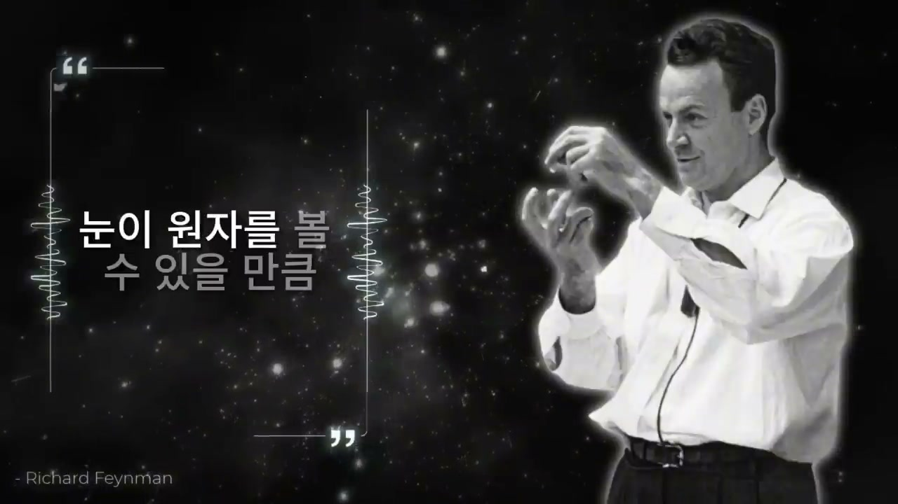
발화자는 파인만의 상상 방식이 겉보기에는 유치하게 들릴 수도 있다고 인정한다. 전자기장을 배울 때 자신이 전자만큼 작아져 끝없는 우주 공간을 둥둥 떠다닌다고 상상하는 식이다. 다른 전하가 옆으로 다가오면 내 몸에 어떤 느낌이 들까, 무엇이 나를 밀어내거나 끌어당길까를 떠올린다. 초등학생 장난처럼 들릴 수 있지만, 이 방식은 매우 강력하게 작동한다.
그 이유는 머릿속에서 현상을 한 편의 영화처럼 볼 수 있게 되면, 그 지식이 완전히 내 것이 되기 때문이다. 뼛속까지 이해한 내용은 죽을 때까지 머릿속에서 잘 지워지지 않는다. 반대로 명확한 그림을 그릴 수 없는 대상에 대해서는 명확하게 생각할 수도 없다. 이 말이 영상 중반부의 핵심 진리로 제시된다.
이 지점에서 발화자는 “머릿속으로 명확하게 그림을 그릴 수 없는 대상에 대해서는 절대로 명확하게 생각할 수 없다”고 정리한다. 많은 사람은 그림 그리는 단계를 건너뛴다. 추상 개념, 복잡한 공식, 혀가 꼬이는 전문 용어, 거창한 이론부터 들이댄다. 그러나 그것이 우리가 발 딛고 사는 현실 세계와 연결되지 않으면, 지식은 머릿속에 뿌리내리지 못하고 의미 없이 둥둥 떠다닌다.
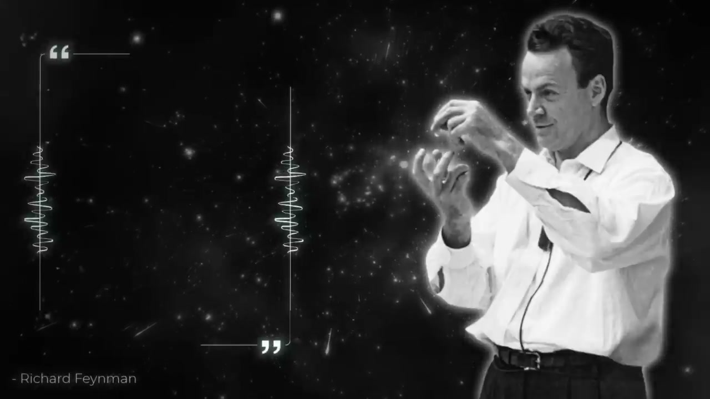
파인만이 터득한 두 번째 비결은 끊임없이 “왜?”라고 묻는 것이다. 발화자는 이것이 한 번 물어보고 마는 질문이 아니라, 어린아이처럼 끈질기게 파고드는 질문이라고 강조한다. 체화하는 데 시간이 꽤 걸릴 수 있으며, 단순한 호기심 표현이 아니라 사고의 근육을 키우는 방식이다.
아이들의 예시가 등장한다. 아이가 “엄마, 하늘은 왜 파래?”라고 묻는다. 어른은 “대기 중에서 빛이 산란되기 때문이야”라고 답한다. 그러면 아이는 다시 “빛은 왜 산란되는데?”라고 묻고, “공기 분자들이 아주 작아서 빛의 파동과 상호작용하기 때문”이라는 답을 들으면 다시 “걔네는 왜 상호작용을 해?”라고 묻는다. 아이들은 끝도 없이 왜를 던지고, 결국 어른이 두 손 두 발 다 들고 “사실 나도 진짜 이유는 잘 몰라”라고 항복할 때까지 파고든다.
발화자는 우리가 어른이 되면서 이 능력을 잃는다고 말한다. 너무 기초적인 걸 물어보면 창피하고, 남들 앞에서 무식해 보일까 두렵기 때문이다. 그래서 속으로는 무슨 말인지 하나도 모르면서 겉으로는 다 아는 척 고개를 끄덕이고 넘어간다. 그러나 이것은 끔찍한 재앙이나 다름없다고 표현된다. 기초 공사가 안 된 상태에서 그 위에 지식을 쌓으면, 아주 작은 바람에도 와르르 무너질 수밖에 없다.
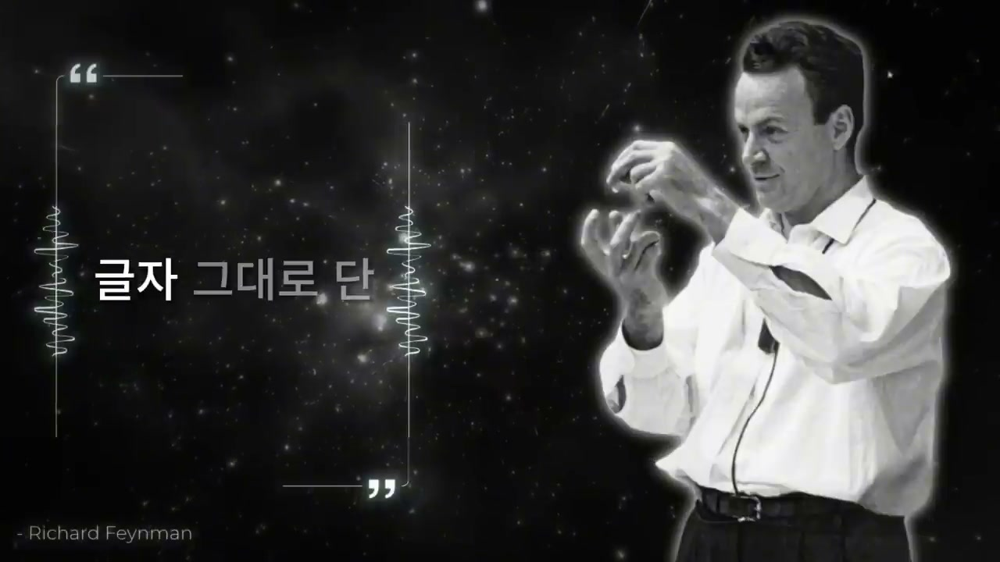
파인만이 칼텍 교수로 있을 때 겪은 유명한 일화가 이어진다. 어느 날 양자역학 때문에 골머리를 앓던 한 학생이 연구실로 찾아와 “불확정성 원리를 도저히 이해하지 못하겠다”고 말한다. 파인만은 “좋아, 그럼 네가 생각하기에 그게 무슨 뜻인지 나한테 설명해 볼래?”라고 한다. 그러자 학생은 갑자기 전공책에 나오는 정의를 줄줄 읊기 시작한다. 위치가 어떻고, 운동량이 어떻고, 플랑크 상수가 어떻다는 식이다.
파인만은 당장 그 학생의 말을 끊는다. “교과서에 뭐라고 쓰여 있는지를 말하라는 게 아니야. 지금 네 머릿속에서 무슨 일이 벌어지고 있다고 생각하는지를 말해 보라”고 한 것이다. 놀랍게도 학생은 입도 뻥긋하지 못한다. 글자 그대로 단 한마디도 할 수 없었다. 왜냐하면 한 번도 자기 스스로 그것을 생각해 본 적이 없었기 때문이다. 그는 책에 있는 글자를 통째로 삼켰을 뿐이었다.
이후 두 사람은 바닥부터 천천히 뜯어보기 시작한다. “양자역학은 잠시 잊어라. 만약 네가 야구공 같은 물건의 위치를 정확히 재고 싶다면 제일 먼저 무엇을 해야 할까?” 학생은 “그냥 공을 봐야 한다”고 답한다. 파인만은 거기서부터 과정을 하나하나 쪼갠다. 전등에서 나온 빛이 날아가 야구공 표면에 튕겨 나오고, 그 빛이 눈의 망막으로 들어오면 우리는 공이 거기 있다는 것을 본다. 여기서부터 불확정성의 직관이 시작된다.
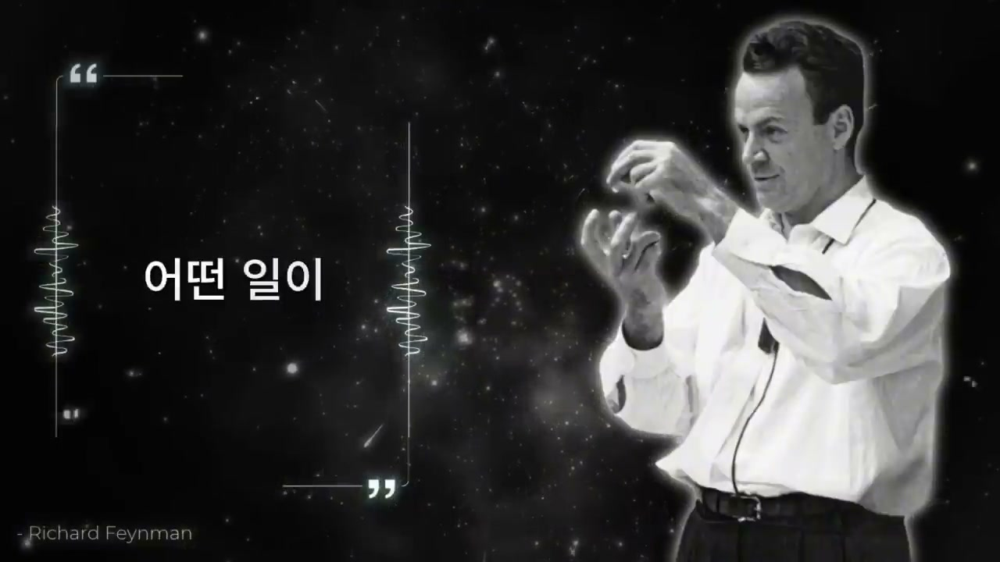
파인만은 학생에게 상상해 보라고 한다. 만약 그 공이 상상을 초월할 정도로 작다면 어떨까. 너무 작고 가벼워서, 그 공을 보기 위해 쏜 빛의 입자가 공에 부딪히는 순간 그 충격으로 공을 휙 밀어내 버린다면 어떻게 될까. 이 질문을 듣는 순간 학생의 표정이 환하게 밝아진다. 마침내 깨달음을 얻은 것이다.
이 깨달음은 새로운 정의를 알려줘서 생긴 것이 아니다. 학생 스스로 실제 현실에서 어떤 일이 벌어지는지를 생각해 냈기 때문에 생긴 것이다. 교과서 문장과 수식에서 빠져나와, 보는 행위 자체가 대상에 영향을 줄 수 있다는 구체적 장면을 떠올린 순간 불확정성 원리는 살아 있는 이해가 된다. 영상은 바로 이것이 숨겨진 비법이라고 말한다.
발화자는 이를 “내 입에서 나오는 나만의 일상적인 단어, 머릿속에서 생생하게 돌아가는 나만의 그림”이라고 정리한다. 한국인이라면 누구나 무릎을 칠 만한 찰떡 같은 비유를 써서 자기 자신에게 설명할 수 없다면, 그 지식을 안다고 착각해서는 안 된다. 아직 내 것이 아니라는 증거이기 때문이다.
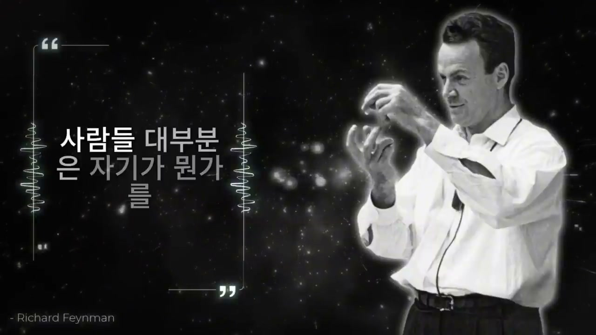
세 번째 비결은 어쩌면 가장 핵심적인 태도다. 바로 모른다는 사실을 두려워하지 않는 것이다. 발화자는 “에이, 누구나 다 아는 뻔한 소리 아니냐”고 생각할 수 있지만 현실은 전혀 그렇지 않다고 말한다. 대부분의 사람은 자기가 모른다는 사실이 남들에게 들킬까 봐 벌벌 떤다. 바보 취급을 당할까 봐, 무식해 보일까 봐 아무렇지 않은 척 연기한다.
그러나 영상은 모른다는 것을 인정하는 일이 부끄러운 게 아니라고 반복한다. 진짜 부끄러운 것은 하나도 모르면서 다 아는 척 연기하는 것이다. 자신이 백지 상태라는 것을 인정하는 순간부터 진짜 배움이 시작된다. 반대로 이미 다 아는 척 허세를 부리기 시작하면 성장은 거기서 완전히 멈춘다. 더 이상 질문을 던지지 않고, 생각이라는 활동 자체를 멈추게 되기 때문이다.
이 태도는 파인만이 세미나에서 보인 행동으로 이어진다. 파인만은 프린스턴이나 칼텍에서 세계적으로 유명한 물리학자가 난해한 발표를 할 때도, 이해가 안 되면 눈치 보지 않고 손을 들었다. 아주 기초적이고 엉뚱한 질문을 던졌다. 사람들은 때로 “저런 것도 몰라?”라는 눈빛으로 보았지만, 세미나가 끝난 뒤 몇 명씩 조심스럽게 다가와 “아까 그 질문을 해 주셔서 정말 고맙다. 사실 나도 하나도 못 알아듣고 있었다”고 말했다고 한다.
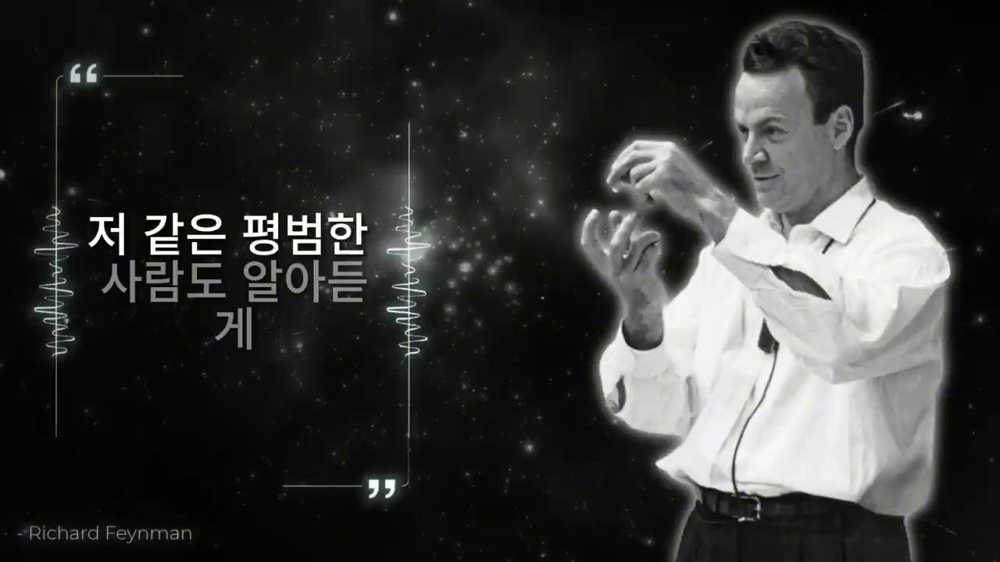
발화자는 여기서 불편한 진실을 말한다. 세상에서 전문가라고 떠드는 사람들의 상당수는 사실 그럴싸하게 포장된 연기자일 뿐이라고 한다. 그들은 자기들끼리 쓰는 있어 보이는 언어를 배웠을 뿐이다. 어떤 타이밍에 어떤 고급 어휘를 던져야 폼이 나는지 아주 잘 알지만, 정작 본인이 지금 무슨 말을 하고 있는지, 본질이 무엇인지는 파악하지 못할 수 있다.
이런 사람을 구별하는 방법은 간단하다고 말한다. 그 사람이 하는 말을 듣다가 “그거 저 같은 평범한 사람도 알아듣게 아주 쉽게 설명해 주실래요?”라고 물어보면 된다. 진짜 이해한 사람은 자기 머릿속 구조가 명확하기 때문에 쉽게 풀어낼 수 있다. 하지만 이해하지 못한 사람은 절대 못 한다. 오히려 당황해서 더 어려운 전문 용어의 늪으로 도망친다. 자기 머릿속부터 복잡하게 엉켜 있기 때문에 남에게 설명할 때도 끝없이 꼬이고 복잡해진다.
파인만은 그래서 스스로에게 엄격한 철칙을 세웠다. 대학 1학년 신입생이나 어린아이, 혹은 그 분야를 한 번도 들어본 적 없는 지나가는 사람에게 설명할 수 없다면, 그것은 나 자신조차 제대로 이해하지 못한 것이다. 그리고 그것은 부끄러운 일이 아니다. 그저 그 주제에 대해 더 치열하게 파고들고 고민해야 할 즐거운 숙제가 생겼다는 뜻일 뿐이다.
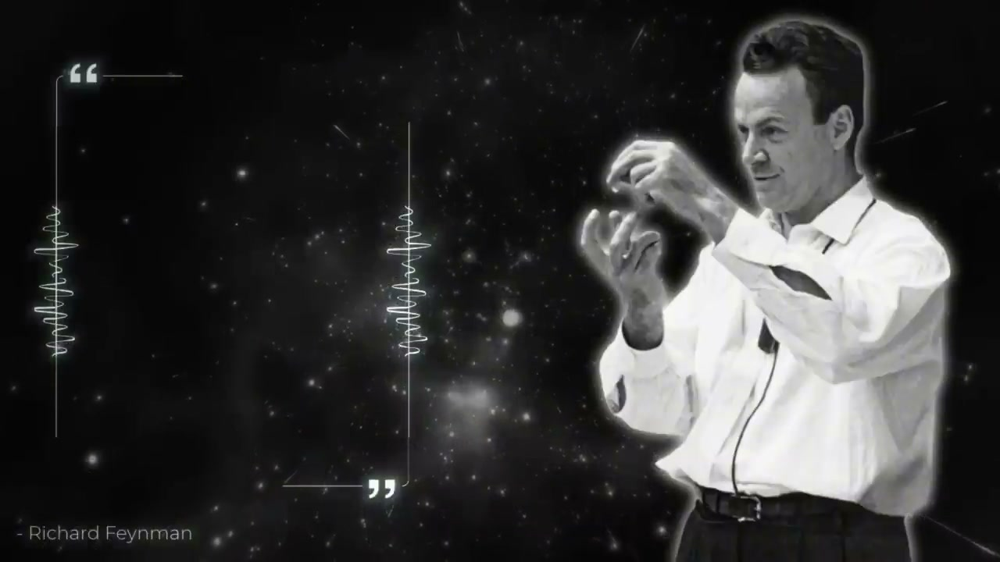
영상은 여기에 한 가지 비결을 더 덧붙인다. 모른다는 사실 자체를 즐기는 법을 배우는 것이다. 길을 가다가 내 머리로는 도무지 이해가 안 가는 기상천외한 현상과 마주쳤을 때, 좌절하거나 짜증을 내는 대신 오히려 가슴이 두근거리고 신나야 한다고 말한다. 왜냐하면 그것은 새로운 장난감을 선물받은 어린아이처럼 앞으로 가지고 놀며 파헤쳐 볼 짜릿한 미스터리가 생겼다는 뜻이기 때문이다.
이 태도는 단순한 낙관주의가 아니다. 모르는 상태를 위협으로 보면 사람은 방어적으로 변한다. 권위 있는 설명에 숨거나, 복잡한 말을 따라 하거나, 질문을 포기한다. 반대로 모르는 상태를 놀이와 탐험의 출발점으로 보면, 오래 붙잡고 관찰하고 실험하고 생각할 수 있다. 영상은 천재적 사고의 실질적 동력이 바로 이 감정 전환에 있다고 본다.
파인만은 로스앨러모스 시절 엄청난 스트레스 속에서 일했다. 원자폭탄을 만드는 일은 세계를 뒤엎을 무게를 가진 작업이었고, 과학자들은 피가 마를 정도의 압박 속에서 밤낮없이 매달렸다. 파인만 역시 극심한 우울에 빠졌고, 한때 사랑했던 물리학이 숨 막히게 무겁고 진지한 족쇄처럼 느껴졌다고 설명된다. 이 배경이 있어야 이후 코넬에서의 결심이 더 선명해진다.
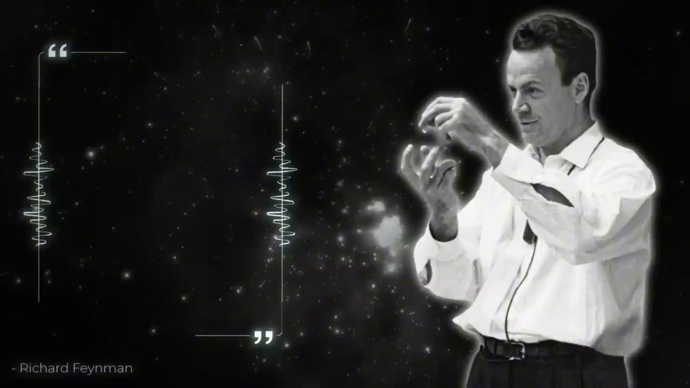
전쟁이 끝나고 코넬 대학교로 돌아간 파인만은 굳은 결심을 한다. “이제부터 나는 과학을 가지고 놀기만 할 거야.” 인류 역사에 길이 남을 엄청난 연구를 해야 한다는 압박감, 대단한 논문을 학술지에 발표해야 한다는 강박을 모두 쓰레기통에 처박아 버린다. 대신 길가다 눈에 띄는 재미있어 보이는 것, 호기심을 자극하는 것에만 정신을 쏟기로 한다.
이 결심은 영상의 정서적 전환점이다. 앞부분이 어떻게 생각해야 하는가에 대한 방법론이었다면, 이 부분은 왜 생각을 놀이처럼 대해야 하는가에 대한 설명이다. 억지로 천재처럼 생각하려고 뇌를 쥐어짜면 사고는 굳고 무거워진다. 반대로 재미와 호기심을 중심에 두면, 아주 사소한 현상도 깊은 탐구의 출발점이 된다.
파인만에게 중요한 것은 위대한 결과를 의도하는 것이 아니었다. 중요한 것은 눈앞의 이상한 현상에 “저게 왜 저러지?” 하고 반응하는 순수한 호기심이었다. 이 태도가 훗날 중요한 과학적 성취로 이어진다는 점이 코넬 접시 일화에서 드러난다.
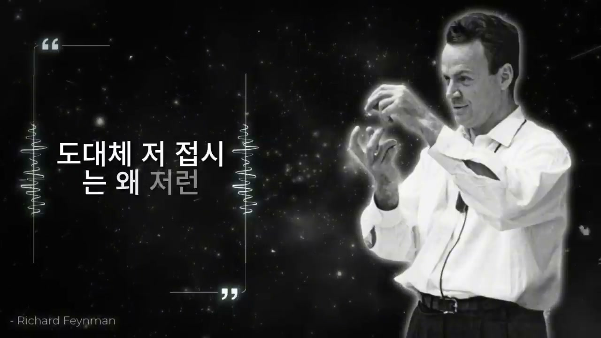
어느 날 파인만은 코넬 대학교 학생식당에서 밥을 먹고 있었다. 그때 어떤 학생이 짓궂게 접시 하나를 공중으로 던지는 장면을 본다. 접시는 공중에서 팽이처럼 빙글빙글 돌며 비틀거리고 있었다. 그런데 그 접시에는 코넬 대학교의 파란색 로고가 새겨져 있었고, 파인만이 가만히 보니 로고가 돌아가는 속도가 접시 전체가 비틀거리는 속도보다 미세하게 더 빨랐다.
파인만의 눈이 번쩍 뜨인다. “어라, 저게 왜 저렇게 돌지?” 호기심이 발동한 그는 밥 먹다 말고 곧장 연구실로 뛰어 올라간다. 오직 재미삼아 수식을 풀기 시작한다. 접시가 왜 그런 식으로 비틀거리는지, 비틀거리는 각도와 회전 속도 사이에는 어떤 연관성이 있는지 파고들고 또 파고든다.
놀랍게도 그 식당 접시의 궤적 안에는 회전 운동과 각운동량에 관한 깊고 오묘한 물리학적 진리가 숨어 있었다. 그리고 발화자는 훗날 파인만에게 노벨상을 안겨 준 위대한 업적의 시작이 바로 이 식당 접시 사건에서 비롯되었다고 말한다. 사소하고 실없어 보이는 계산 하나가 인류의 물리학을 한 단계 끌어올린 것이다.
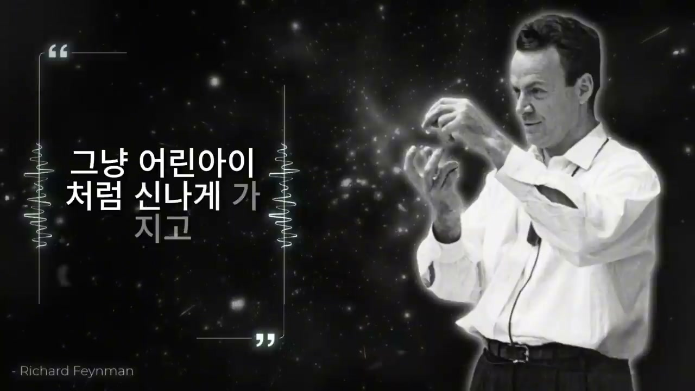
발화자는 파인만이 접시 수식을 풀 때 “이걸로 노벨상을 타야지”라고 생각했을 리 없다고 말한다. 역사에 남을 위대한 발견을 하겠다는 웅대한 포부도 없었다. 그는 그냥 어린아이처럼 신나게 가지고 놀았을 뿐이고, 순수한 호기심에 이끌렸을 뿐이다. 영상은 바로 이 지점이 모든 것을 결정짓는 진짜 필살기라고 본다.
천재처럼 거창하고 비범하게 생각하려고 뇌를 억지로 괴롭힐 필요는 없다. 오히려 동네 골목길을 쏘다니며 잡동사니를 주워 모으는 아이처럼, 내면의 순수한 호기심이 마음껏 뛰어놀도록 두어야 한다. 끊임없이 질문을 던지고, 남들이 그렇다고 하니까 앵무새처럼 받아들이는 대신, 세상 이면에서 진짜로 무슨 일이 돌아가는지 내 두 눈으로 보려고 해야 한다.
영상의 후반부는 이 태도를 실천 지침으로 바꾼다. 누군가 무언가를 설명할 때, 그게 무엇이든 누가 말하든 절대 그냥 고개를 끄덕이며 받아들이지 말라고 한다. 스스로에게 가차 없이 되물어야 한다. “저게 진짜로 무슨 뜻이지?”, “내 머릿속에서 현실감 있는 그림으로 그려지나?”, “지나가는 민수에게 내 언어와 일상 용어로 쉽게 풀어낼 수 있을까?”
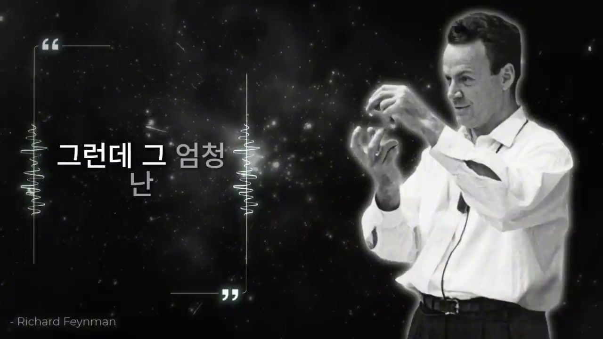
영상은 이해를 지능지수의 문제가 아니라 끈기의 문제로 정리한다. 내가 지금 바라보고 있는 현상을 대충 넘기지 않고, 기어코 내 머리로 직접 생각해 내고야 말겠다는 뜨거운 집요함과 애정의 문제라는 것이다. 세상의 최고 천재들과 부대끼며 산 파인만은, 노벨상 수상자, 뛰어난 수학자, 전설적인 물리학자들을 가까이에서 보았다. 그중 몇 명은 정말 숨 막힐 정도로 비상한 사람도 있었지만, 대다수는 질문을 멈추지 않는 평범한 사람들이었다고 설명된다.
이 말은 매우 중요하다. 영상은 천재를 신비화하지 않는다. 오히려 천재처럼 보이는 사람들의 실제 비결을 끈질긴 질문, 무비판적 수용 거부, 모름의 인정, 순수한 호기심으로 낮춰 잡는다. 낮춰 잡는다는 것은 폄하가 아니라, 우리가 따라 할 수 있는 수준으로 재구성한다는 뜻이다. 그래서 발화자는 “여러분이라고 못할 이유가 있습니까?”라고 묻는다.
특별한 유전자를 타고나야 하는 것이 아니다. 한 번 부딪쳐 보겠다는 작은 용기와 세상을 향한 애정 어린 시선만 있으면 충분하다고 한다. 결국 사고는 머리의 타고난 광채보다 태도의 지속성에 가깝다. 질문을 포기하지 않는 사람이 본질에 가까워진다.
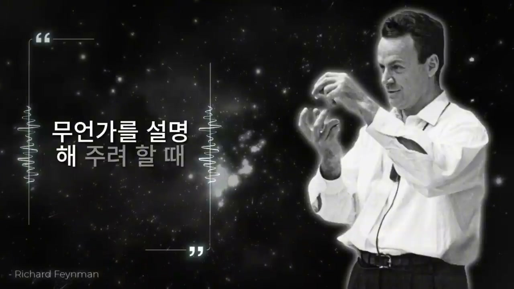
마지막으로 발화자는 오늘부터 누군가가 무언가를 설명해 줄 때 절대 그냥 받아들이지 말라고 요청한다. 그 사람이 누구든, 내용이 무엇이든, 권위가 얼마나 크든 상관없다. 중요한 것은 내 머릿속에서 그 설명이 현실감 있는 그림으로 그려지는가다. 그려지지 않는다면 아직 이해하지 못한 것이다.
스스로에게 물어야 할 질문은 구체적이다. “저게 진짜로 무슨 뜻이지?” “내 머릿속에서 현실감 있는 그림으로 그려지나?” “지나가는 민수에게 내 언어로, 아주 자연스러운 일상 용어로 쉽게 풀어낼 수 있을까?” 만약 그것이 안 된다면 나는 아직 그것을 요만큼도 이해하지 못한 것이다. 그리고 괜찮다. 전혀 부끄러운 일이 아니다.
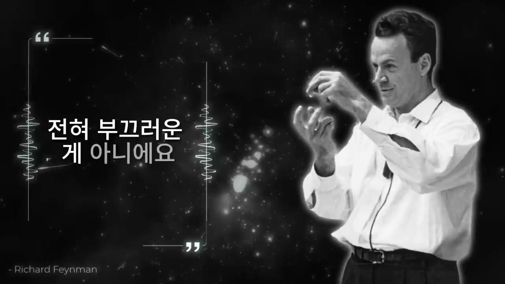
오히려 바로 그 모른다는 인정에서 우리의 뇌가 진짜 살아 숨 쉬는 생각을 하기 시작한다. 영상은 “이해하지 못했다”는 판단을 실패가 아니라 출발점으로 본다. 인정하고, 번역하고, 왜를 묻고, 끝까지 파고들고, 모름 자체를 즐기는 순간 사고는 수동적 암기에서 살아 있는 탐구로 바뀐다. 이것이 영상 제목이 말하는 “천재처럼 생각하도록 뇌를 강제하는” 방법이다.
“대단한 천재성이 필요한 게 절대 아닙니다. 진짜 중요한 건 따로 있거든요.”
“이름을 아는 것과 그것을 진짜로 아는 것은 완전히 다른 문제입니다.”
“우리가 흔히 교육이라고 부르는 것들의 상당수는 사실 그저 껍데기 같은 이름표를 외우는 것에 불과합니다.”
“진짜 생각, 살아 있는 사고라는 건 지금 저기서 실제로 무슨 일이 벌어지고 있는 걸까라고 질문을 던지는 데서 시작됩니다.”
“뭔가를 그냥 아는 것과 그걸 제대로 이해하는 것 사이에는 아주 거대한 벽이 있습니다.”
“머릿속으로 명확하게 그림을 그릴 수 없는 대상에 대해서는 절대로 명확하게 생각할 수도 없습니다.”
“끊임없이 왜라고 묻는 겁니다.”
“모른다는 사실을 인정하는 건 전혀 부끄러운 게 아닙니다. 진짜 부끄러운 건 하나도 모르면서 다 아는 척 연기하는 겁니다.”
“인간이 할 수 있는 가장 똑똑한 행동은 모르는 걸 모른다고 인정하는 겁니다.”
“그 분야를 한 번도 들어본 적 없는 사람에게 설명할 수 없다면, 그건 나 자신조차도 제대로 이해하지 못한 것이다.”
“모르는 사실 자체를 즐기는 법을 배우는 겁니다.”
“무언가를 이해한다는 건 지능지수가 높고 낮음의 문제가 아닙니다. 그건 끈기의 문제입니다.”
이 영상의 핵심 메시지는 파인만식 사고가 특별한 천재성의 산물이 아니라는 점이다. 파인만은 이름표를 외우지 않고 실제 대상을 보려 했고, 수식을 그대로 받아들이지 않고 현실 장면으로 번역했으며, 모르는 것을 부끄러워하지 않고 끝까지 질문했다. 그는 권위와 전문 용어 뒤에 숨지 않았고, 자기 머릿속에서 현실감 있는 그림이 만들어질 때까지 기다렸다. 그래서 그의 사고는 빠른 암기보다 느린 이해, 그럴듯한 말보다 정확한 그림, 체면보다 질문을 중시했다.
실용적 시사점은 명확하다. 어떤 지식을 배울 때 먼저 그것을 내 언어로 번역해야 한다. 그다음 “왜?”를 반복해 기초까지 내려가야 한다. 이해가 안 되면 모른다고 인정해야 하며, 그 인정에서 부끄러움을 느끼기보다 새로운 탐구가 시작된다고 받아들여야 한다. 마지막으로, 내가 배운 내용을 아무 배경지식 없는 사람에게 일상 언어로 설명할 수 있는지 확인해야 한다.
따라서 이 영상은 공부법 영상이면서 동시에 지적 태도에 관한 선언이다. 진짜 사고는 남의 말을 따라 하는 것이 아니라, 세상을 향해 직접 묻는 것이다. 남들이 이미 결론을 내리고 떠난 문제라도 혼자 남아 끝까지 물고 늘어지는 태도가 본질을 만든다. 천재처럼 생각한다는 것은 거창한 사고를 흉내 내는 것이 아니라, 어린아이처럼 묻고, 과학자처럼 관찰하고, 정직한 사람처럼 모른다고 인정하며, 끝내 자기 언어로 이해해 내는 것이다.
댓글
GitHub 이슈 기반 댓글 시스템입니다.